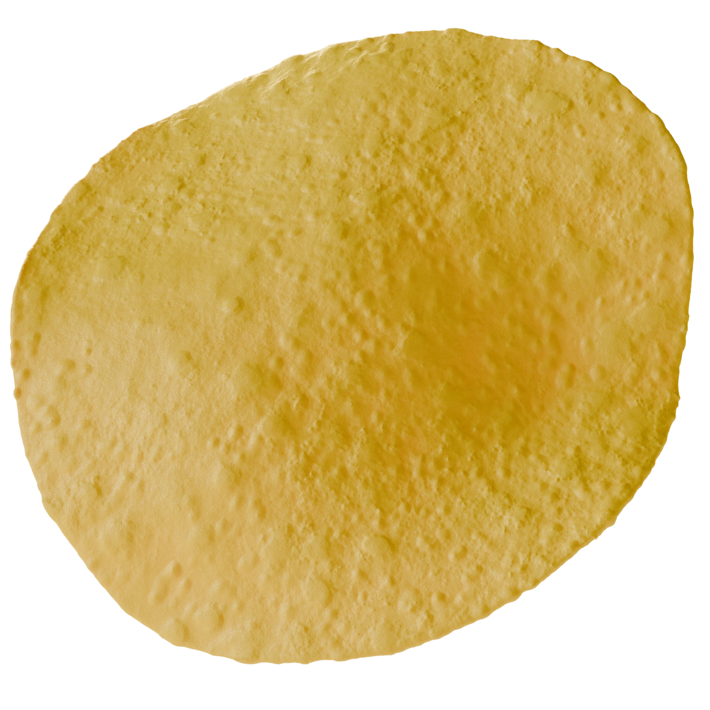
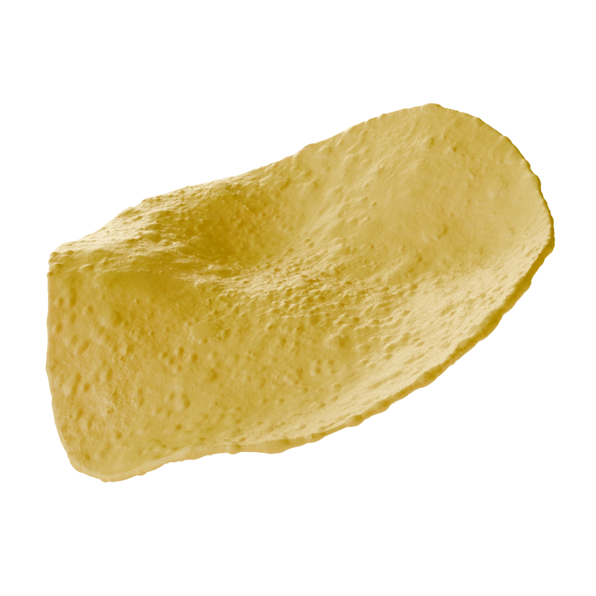
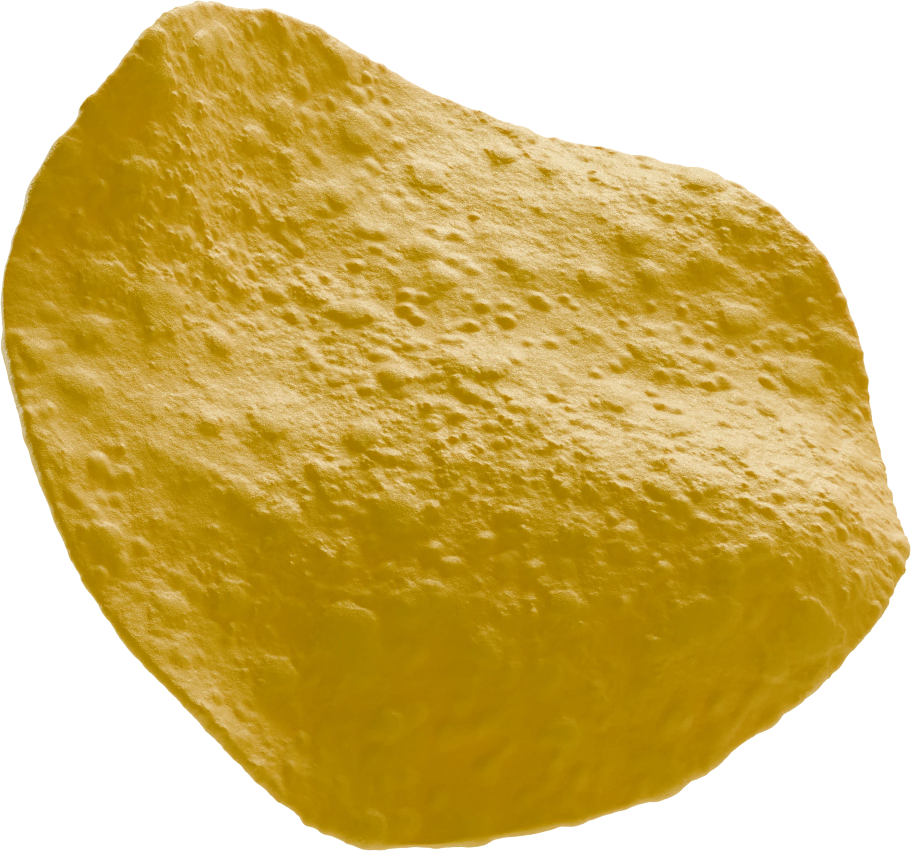

Maarud is a Norwegian snack maker best known for its potato chips, and Q is a Norwegian dairy brand. Together they ran a summer campaign. Buy chips and dip, and you could win a paddle board. The campaign paired Maarud's chips and dip mix with Q sour cream. I was the motion designer on the team at SDG\TBWA, focusing mainly on social media content.
The challenge
The campaign needed a steady flow of content across many surfaces and formats, and it needed to be able to grow as the campaign expanded. There was also a practical problem. Only a limited set of pack shots existed for the products, and they didn't match each other well enough to use side by side.
The approach
I built the campaign in 3D. I created a range of scenes that could be combined and reused across surfaces, so new formats were a matter of re-rendering rather than rebuilding. I also recreated the products themselves in 3D. That gave us one consistent set of product images across the whole campaign, and it reached well beyond my own animations. The same renders were used for posters and the website landing pages.
Result
A successful campaign, carried across social, print and web from a single set of 3D assets. What I'm proudest of is how far the work reached. The product renders ended up helping other departments well beyond my own brief.


